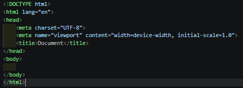
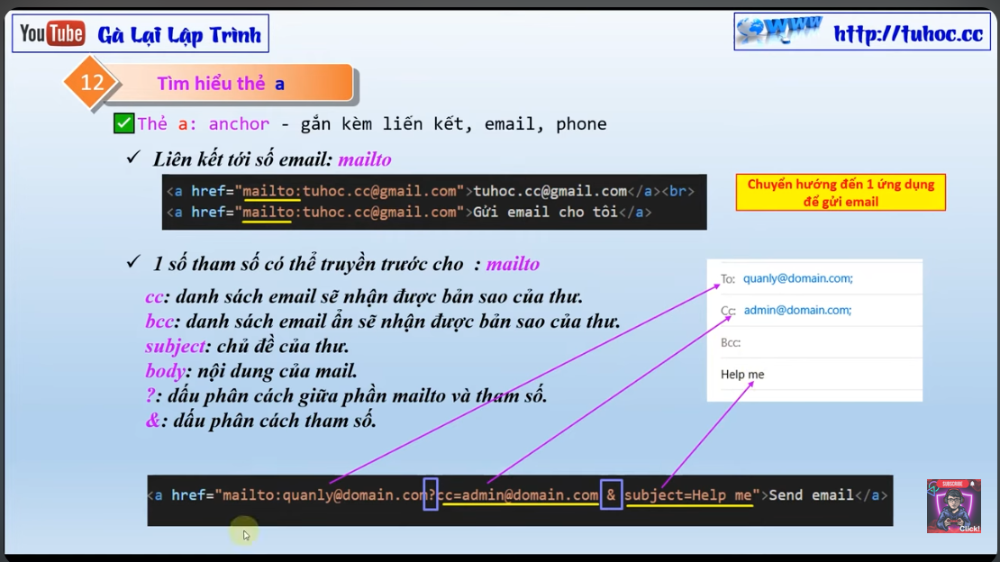
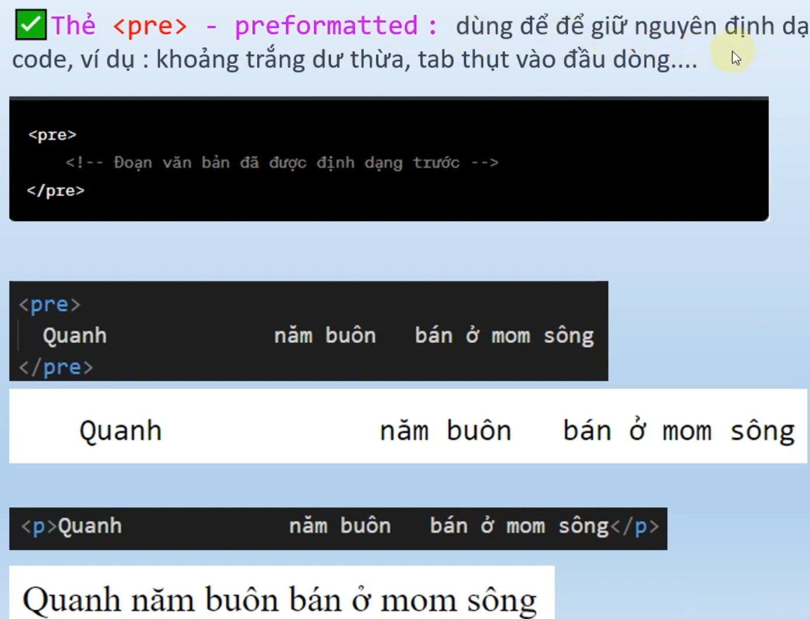
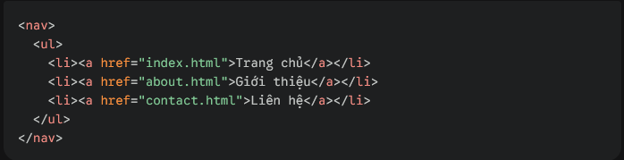
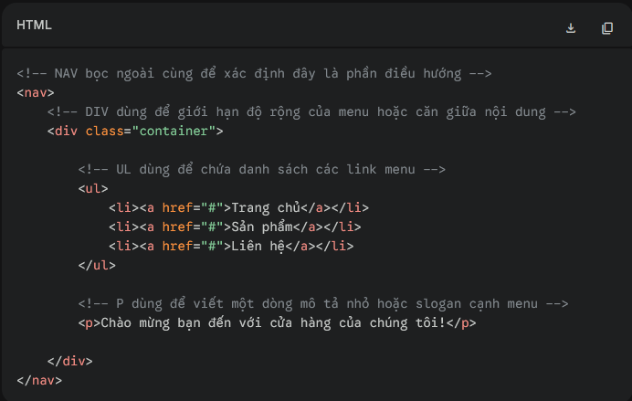
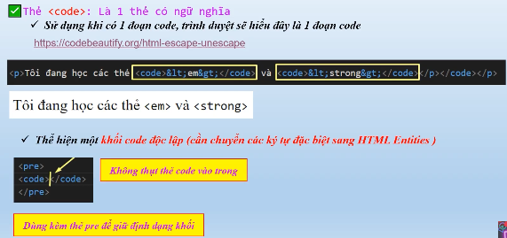

Tổng quan về HTML
- Website: html,css,js->ngôn ngữ lập trình cơ bản
-
Front-end: giao diện bên ngoài có thể nhìn thấy (UI/UX)
FE có 2
dạng
Web tĩnh (Static website): không thể tương tác
Web động
(Dynamic website): có thể tương tác
- Back-end: Nơi thông tin được gửi và xử lý database lên website
FE-search thông tin -> BE-tìm kiếm thông tin dựa trên từ khoá -> BE- dịch
thông tin qua html,css,js -> FE-web hiển thị thông tin
HTML là ngôn ngữ đánh dấu siêu văn bản
Dùng để xác định nội dung & cấu trúc trang web
CSS Ngôn ngữ định dạng
Dùng để tô màu, in đậm, in nghiêng,... (UI)
JS Thao tác trên văn bản html
Ẩn hiện, click, thay nội dung,... (UX)
Cấu trúc 1 file index

-
Thẻ head: chứa thông tin tiêu đề trang, tác giả, các tập tin css, js
được link với trang, các thông tin quan trọng để tối ưu công cụ SEARCH
+ Mục meta: để trang web đọc các chức năng như ngôn ngữ, dài/rộng
trang,... rộng
-
Thẻ body: nội dung hiển thị trong trang web
trong đó có các thẻ
tiêu đề từ h1-h6, nội dung có thể dùng Lorem để tạo văn bản tự động thay
thế
có thể tạo các dòng comment để note trong code bằng shortcut
"CTRL+SHIFT+/"
-
Có các thẻ định dạng văn bản
-
p (paragraph): chứa khối văn bản, có thể dùng ALT+W để gắn nhanh
-
b (bold): in đậm, có thể dùng (strong) để thay đổi nội dung quan
trọng, chủ yếu cho các trình đọc văn bản nhấn mạnh
-
i (italic): in nghiêng, dùng (em-emphasis) để nhấn mạnh nội dung
- u (underline) gạch chân
-
ul (un-order list): tạo danh sách không thứ tự
ol (order
list): tạo danh sách có thứ tự
+ Thẻ ul và ol kết hợp với thẻ
li để tạo đánh dấu (symbol) đầu dòng
Cấu trúc: li*(số dòng)
tạo nhiều dòng đánh dấu tự động
li*$ để tạo đánh dấu số theo
thứ tự
-
a (anchor): thẻ đặc biệt để gắn link email, website, sđt,...

- img (image): thẻ gắn hình
- thẻ br dùng để xuống dòng trong 1 đoạn văn
- thẻ hr dùng để tạo gạch ngang ngắt dòng
- Một số thẻ định dạng văn bản nâng cao
-
pre (preformatted): dùng để giữ nguyên tất cả định dạng trong trình
soạn thảo code

-
nav (navigation): Dùng để nhóm các dòng code có gắn link như footer,
hoặc menu header

-
div (division): Dùng để nhóm các đối tượng mong muốn thành 1 cấu trúc
hoặc định dạng (styling), nhằm giúp css và js dễ dàng áp style vào
khối văn bản

-
Thẻ code: mặc dù không hiển thị trên trình duyệt nhưng đây là
THẺ CÓ NGỮ NGHĨA, dùng để kết hợp với thẻ pre và mã html
entities, nhằm đánh dấu đoạn văn bản đây là 1 đoạn code
